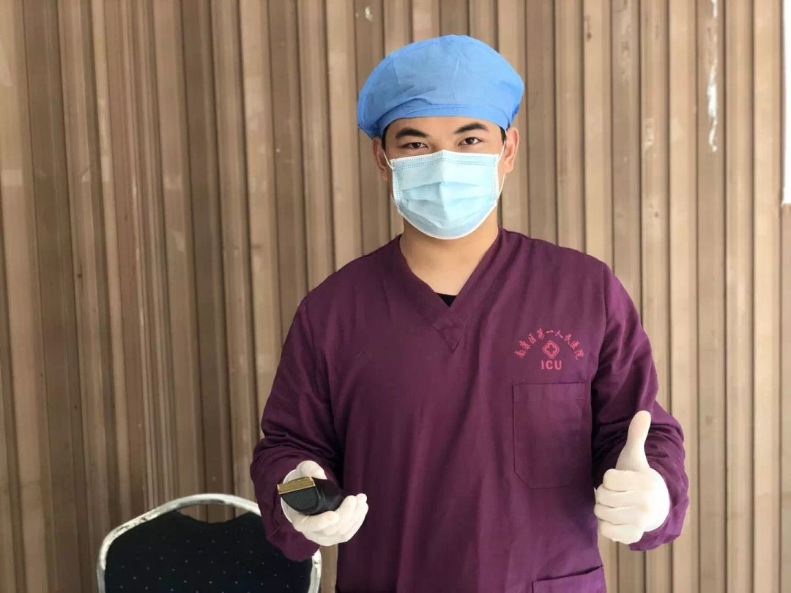
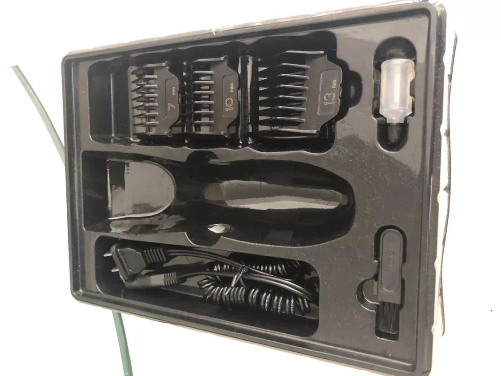
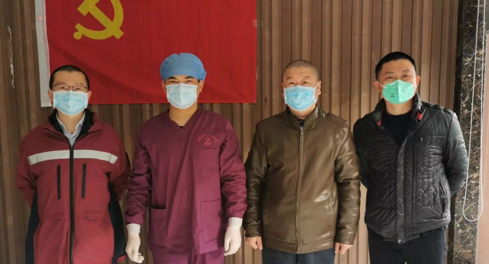

在武汉，我为医务人员剪头发
原文链接 备份链接 沈杰把为医务人员理发的短视频上传到社交网络，获得了两种意料之外的回应：一种说他“胆子大”，“这种时候还敢到医院去”，另外一种，则是更多医务人员请他帮忙。 对他而言，自己只是偶然接到了一个医生的电话，了解对方困境后没犹 …
澎湃新闻记者 邓雅菲 实习生 苏笑语
“在支援湖北行前工作能力摸底时，我得知队友几乎都是有十几年ICU经验的主管护师，而我，除去三个月试用期，正式工龄才两个月，我能胜任紧张的一线工作吗？”飞往武汉的专机上，江西省赣州市南康区第一人民医院ICU男护士、江西援鄂医疗队成员蒋孔明内心忐忑不安。
1月26日，大学刚刚毕业、正式工龄仅两个月的25岁ICU护士蒋孔明怀着一腔热血主动报名参加江西援鄂医疗队，前往武汉的抗疫一线。
蒋孔明说，因为自己是新人，临床经验比较少，在武汉的抗疫一线特别担心会拖同事们的后腿，所以想尽自己最大的能力，多帮大家做一点事情，减轻大家的负担。除了完成一线的本职护理工作，他还利用休息时间帮70多位医务人员理发。
到达武汉一线后，为了降低感染风险，医疗队的成员们都决定将头发剪短，但武汉街头大大小小的理发店已经全部停业。在大家一筹莫展时，蒋孔明自告奋勇帮大家剪发，“tony蒋”的名号渐渐传了开来。
“在赣州市南康区第一人民医院ICU工作时，我有过几次帮看护的病人理发的经历，这次我就自告奋勇帮大家剪发。给第一个同事剪完后，发型丑得大家都笑了，但随着我的手艺越来越熟练，大家都说‘tony蒋’以后可以改行了……因为一直理发，我右手中指第二关节处有一个已经破溃的水泡。”2月16日，蒋孔明告诉澎湃新闻（www.thepaper.cn）。
奋战在武汉抗疫一线的二十余天里，蒋孔明从刚刚踏出校园的一名“新人”，迅速成长为“火线”上一名合格的“战疫者”。

准备为医疗队友剪发的蒋孔明。本文图片均由受访者提供
【蒋孔明的口述】
毅然踏上抗疫一线的一名“新人”
2019年7月，我从赣南医学院护理学急危重症专业毕业后，在赣州市南康区第一人民医院工作，是一名ICU护士。在前往抗疫一线的时候，除去医院三个月的试用期，我的正式工龄只有两个月。
今年大年初二，1月26日，我带着刚刚毕业的懵懂，满怀着一腔热血，报名参加了江西援鄂医疗队，走之前我谁也没有告诉，谁也不敢告诉。
大年初三，在飞往武汉的前一刻，妈妈打来电话问，“你在哪？”我还没回答，她已经哭成了泪人。开弓没有回头箭，在母亲千叮咛万嘱咐之后，我登上了飞往武汉的专机。
在飞机上，我的内心很忐忑，在行前工作能力摸底时，我得知队友几乎都是有十几年ICU经验的主管护师，而我，加上三个月的试用期，一共才工作五个月啊！我能胜任紧张的一线工作吗？
但我随即给自己加油打气，告诉自己，我毕业于专业院校，学校里还有十个月的实习经历，早已能胜任ICU的大部分工作。
就这样，我前往了武汉市第五医院，开始了我的战“疫”工作。
成为医疗队的理发“tony蒋”
刚到武汉没几天，大家在培训的时候发现，穿脱防护服、戴帽子时，不管怎么弄都有长头发掉下来。于是为了方便日常打理，也为了减少感染的风险，队员们商量着想把头发剪短。奈何昔日繁华的武汉街头早已了无人烟，哪还有什么理发店。
工作中我照顾过一些长期住在ICU的病人，由于他们的家属不能进来探视，病人头发长了就需要把头发剪短。五个月前，我一到医院上班就开展了给病人理发的这项服务。因为有相关经验，于是我毛遂自荐，给队友们把头发剪短。

蒋孔明为队友剪发。
面对自己的第一个顾客，内心还是是很紧张的，压力也很大，毕竟以前大家都是到专业的理发店，找专业的“Tony老师”理发，而我自己的理发水平毫无技术可言。
当时没有工具，就找酒店借了一把大剪刀；没有披肩，就用练操作时穿的隔离衣。
第一位找我剪发的是一位“女战友”，她的要求是：把头发剪短，尽可能的短，但是剪完后还可以用皮筋绑起来。
我一开始不敢剪，“女战友”却一再鼓励我说：“没事，你剪吧，没啥要求，就是短一点，戴帽子的时候头发不会露出来。丑一点没关系，只要能减少感染的机会，能平安回家，就可以了。”
再三询问、确认后，我才敢动手。第一个的效果也是意料之中，真的好丑——马尾长短不一，剪的太短了一些。大家看到都笑了起来，紧张的工作气氛也稍微轻松了一点。
虽然“女战友”有些无奈，但是她也很理解，还不停鼓励我。后来在大家的帮助下，找到了解决的办法：就是把头发扎起来再剪！这样会平整好多，也更好看。
过了几天，有同事带来了电动理发刀，剪发的速度就大大加快了。给男同志剪发相对来说更简单，只要求短！不到10分钟，一个标准的4毫米板寸就能“一推而就”。
有些女队友想剪男士寸头，但又下不了决心，我就会折中一下，给她剪一个男士短发，先用大剪刀剪短长头发，再用电动理发刀慢慢修。

蒋孔明的剪发“装备”。
就这样，为几个队友剪了发之后，大家渐渐都来找我帮他们理发。大家都热情高涨，格外地信任我，自觉的地排起了队等待理发，还称呼我为“tony蒋”。
剪完头发的“战友”会协助我一起剪，还有“战友”主动提供吹风机。慢慢地，我的技术也有了提高，队友们纷纷对我竖起大拇指，还开玩笑说，以后我可以改行了，剪完头发后还要求和我合影。
印象很深刻的是一位女队员，她犹豫了很久要不要剪寸头。排队轮到她的时候，她说，“你们先剪吧，我再等一下。”又轮到她的时候，她还是想再等一下。但是到了最后，她还是下定了决心。
开始剪之后，我把第一缕头发放在她手上，想给她留作纪念，那时候她就哭了。
我想，每一位“女战友”平时都是爱美的普通女孩，而因为这次疫情，她们才变成了无坚不摧的“战士”。
理发、工作两不误，不取得最后胜利绝不撤退
迄今为止，我一共帮七十多位“战友”剪了头发。
比较繁忙的时候是在前往一线的前两天。头一天剪到晚上十点钟才休息，最多的一天，剪了有三十多位。
因为长时间、高强度的理发工作，我的右手中指都磨出了水泡。这项工作一直没有停止，因为随着时间的推移，我们已经来武汉半个多月，第一批理发的“战友”头发又慢慢长了起来，隔三差五就有人找我理发。

蒋孔明和同事们的合影。
在一线工作这段时间，我每天按时按点到重症监护室上班，为重症病人进行护理，包括治疗、生活护理、心理护理等等。
刚到武汉的时候，在完全陌生的环境下需要马上投入工作，第一次上岗就全权负责接管病人。没有护士长带我们提前熟悉环境，更没有老师带教。之前坚守岗位近一个月的武汉的医务人员都已经太累了，他们才是真正的英雄，是我们来晚了。
不知不觉，距离出征的日子已经过去半个月，ICU的工作也慢慢熟知于心。现在我不仅能够把自己班上的事情做好，还能够清清楚楚的把病人交接给下一班。
每次下了班，我都会与母亲通电话。母亲问，“什么时候能回来呀？”我说：“快啦快啦，再有个半个月，我就回来了。”
我每天都这样安慰着她，但自己心里却深知：抗疫任重道远，不取得最后胜利绝不撤退。
本期编辑 常琛
推荐阅读


原文链接 备份链接 沈杰把为医务人员理发的短视频上传到社交网络，获得了两种意料之外的回应：一种说他“胆子大”，“这种时候还敢到医院去”，另外一种，则是更多医务人员请他帮忙。 对他而言，自己只是偶然接到了一个医生的电话，了解对方困境后没犹 …
原文链接 备份链接 2020年2月17日。 农历正月廿四。 武汉封城第廿六天。 天门封城第廿五天。 顶着中午的艳阳，伯伯帮我把头发推了。我自己对着镜子，把胡子也剃了。蓄到肉眼可见，还真是人生头二回。然后冲了个澡，舒舒服服。剃刀是爸爸拿来 …
原文链接 备份链接 快递小哥、理发师、医护人员、患者……身处抗疫一线的每个“小人物”的相遇与重逢，都是一篇生动鲜活的故事。他们既平凡，又伟大，他们是历史长河中的沙砾，我们拾起来，放在阳光下也闪闪发光。 记者 | 吴 雪 一个普通工作日的 …
原文链接 备份链接 哪个女孩不爱美？图为李冉和文彬两人一起的工作照。 中新社记者 安源 摄 *中新社记**者/夏春平* 今天是情人节，文彬和李冉已约好去纽宾凯尚居酒店为住在这里的医疗队员免费理发。 30岁的小伙子文彬和他24岁的恋人李 …
原文链接 备份链接 今天是元宵节，广东省支援湖北疫情防控医疗队前往武汉已半个月了。当万家团圆时，他们正义无反顾地奋战在抗疫最前线，南方医科大学珠江医院ICU主治医师王凯就是其中一员。 目前正在援助武汉的南方医科大学珠江医院ICU主治医师王 …